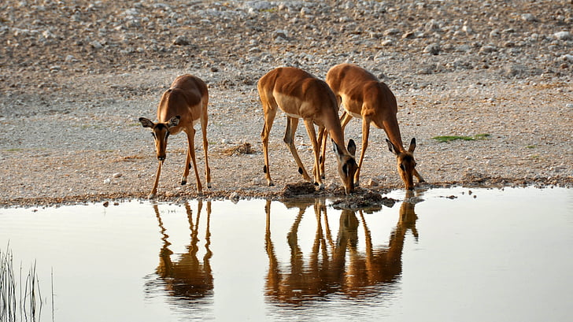
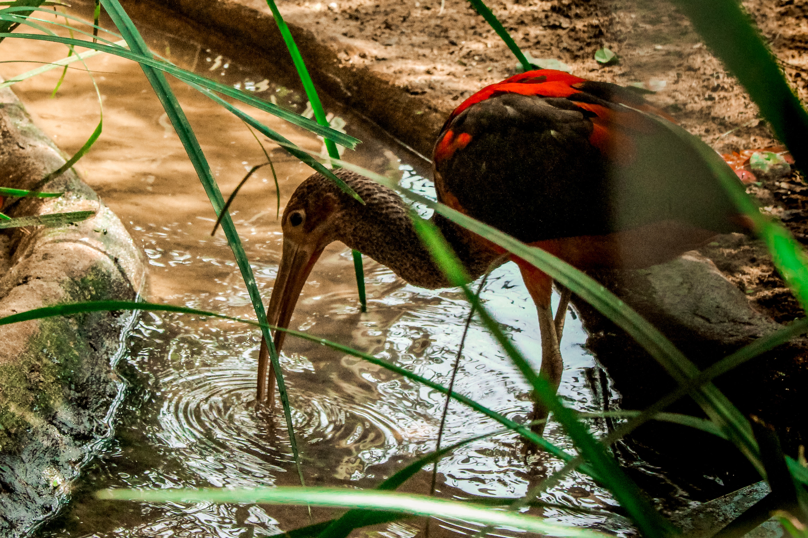

The Value of Water
Water is very important to each and every one of us.
Click on the buttons bellow to find out the details!


Uses of water
In our daily lives, there are many things that clearly use water.
Take a look through this slide show. Are there any items inside that surprise you?


How water sustains nature
Click the Animals and Plants to see how they interact with Nature everyday!

Living things need water to live.

Frogs are amphibians, and grow from tadpoles. Tadpoles live in water.

Besides water for drinking, this bird lives on fishes, which live in water.

Certain birds play in water from time to time when they bath.

Fishes live in water.

Trees and plants require water to keep growing, in turn allowing places to remain beautiful.